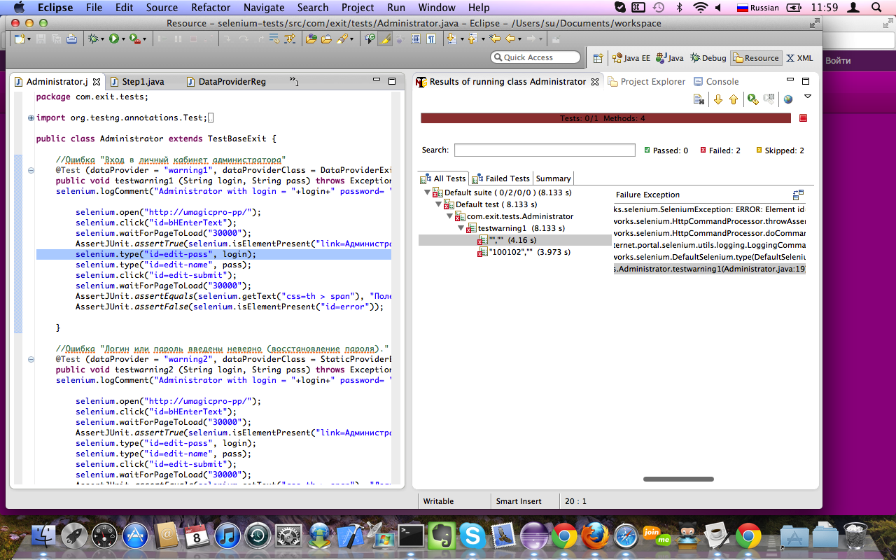

| Selenium-Command | Parameter-1 | Parameter-2 | Res.RC | Res.Selenium | Time [ms] | Calling-Class with Linenumber |
| executing createNewLoggingSelenium() |
| windowFocus | | | OK | OK | 10 | com.test.fw.SeleniumHelper#72 |
| windowMaximize | | | OK | OK | 15 | com.test.fw.SeleniumHelper#73 |
| executing getSelenium() |
| getLocation | | | OK | http://umagicpro-pp/selenium-server/core/Blank.html?start=true | 27 | com.test.fw.SeleniumHelper#34 |
| getLocation | | | OK | http://umagicpro-pp/selenium-server/core/Blank.html?start=true | 8 | com.test.fw.SeleniumHelper#34 |
| executing testwarning1() |
| Administrator with login = password= |
| open | http://umagicpro-pp/ | | OK | OK | 1895 | com.exit.tests.Administrator#15 |
| click | id=bHEnterText | | OK | OK | 123 | com.exit.tests.Administrator#16 |
| waitForPageToLoad | 30000 | | OK | OK | 1762 | com.exit.tests.Administrator#17 |
| isElementPresent | link=Администратор | | OK | true | 8 | com.exit.tests.Administrator#18 |

automaticErrorScreenshot2012-08-08_11-59.png | 360 | com.exit.tests.Administrator#19 |
| type | id=edit-pass | | ERROR | com.thoughtworks.selenium.SeleniumException - ERROR: Element id=edit-pass not found | 367 | com.exit.tests.Administrator#19 |
| executing dismissSelenium() |
| close | | | OK | OK | 58 | com.test.fw.SeleniumHelper#82 |
{kind=link}